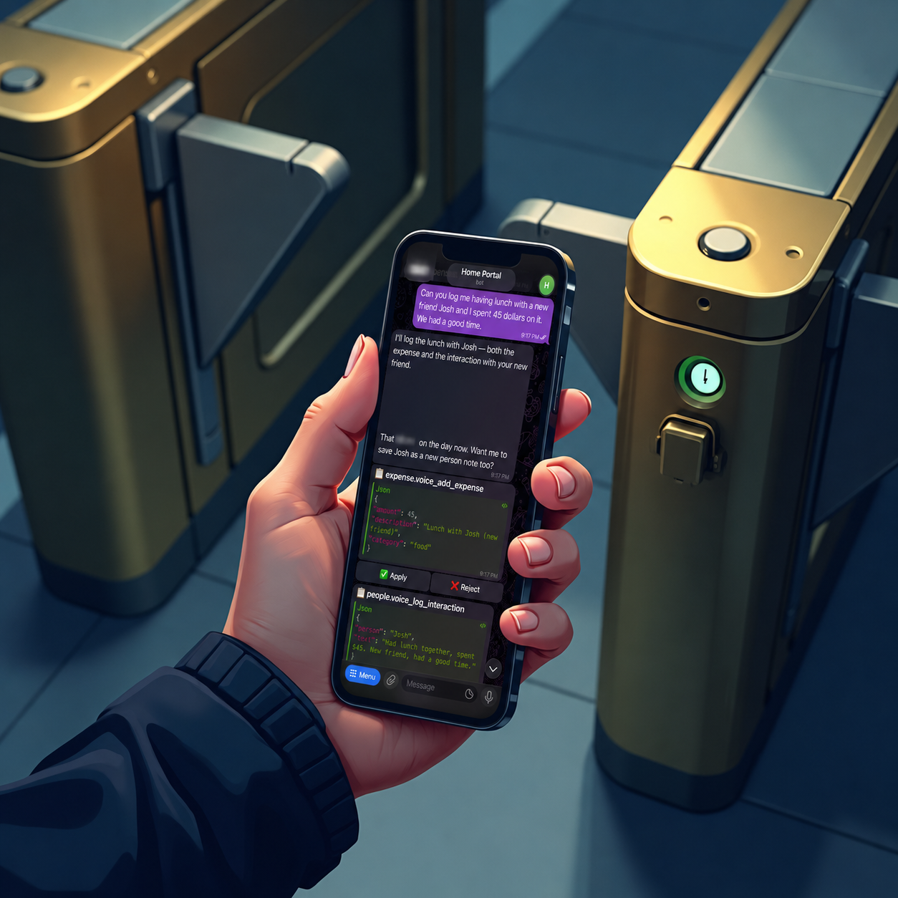
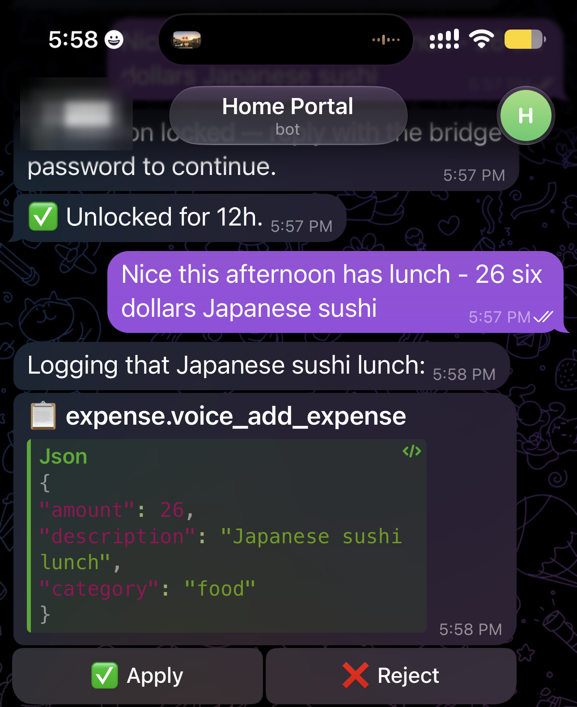
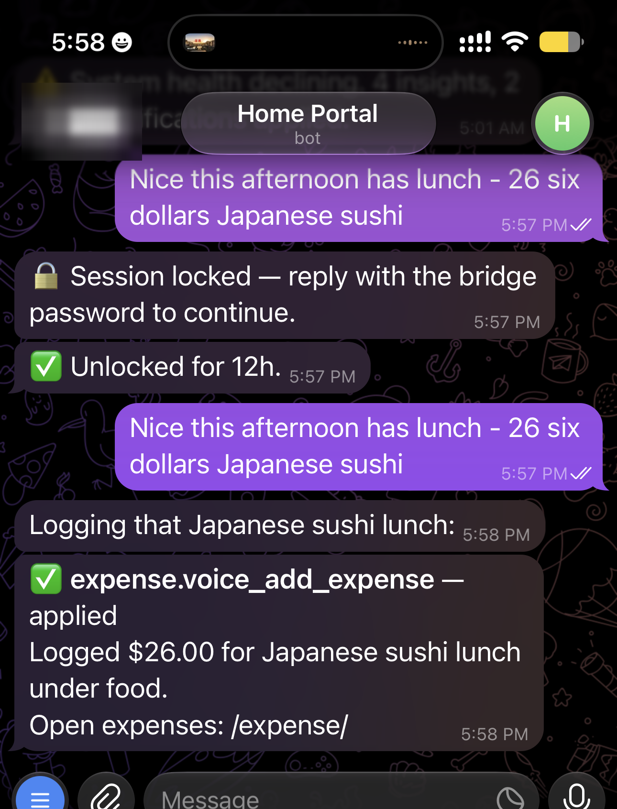
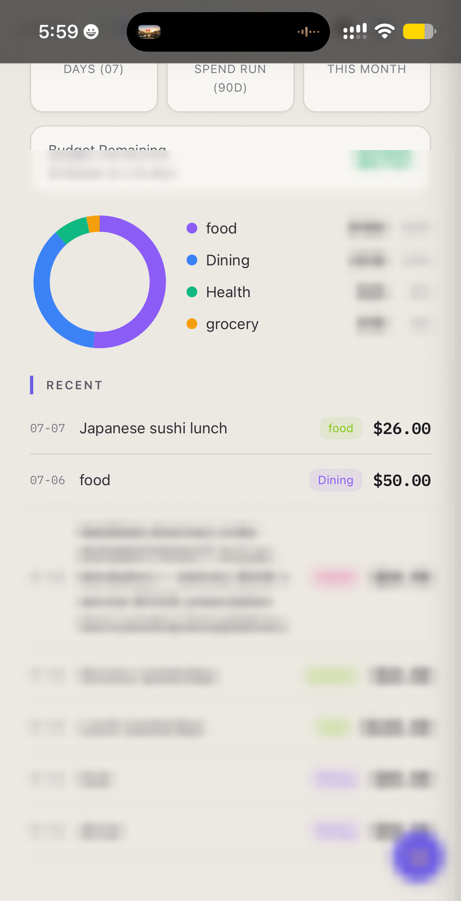

Chat App as Pocket Console: A Safe Front Door to EmptyOS from Telegram

A chat app is a tempting front door for a personal AI system.
It is already on the phone. It supports text, voice notes, notifications, and inline buttons. It is the place you can reach while walking, commuting, leaving a shop, or remembering a task away from the desk. Used well, it becomes a pocket console: a small control surface for the operating system in your notes.
Used badly, it becomes a back door.
That was the design problem when I connected EmptyOS to Telegram. I did not want a bot that could write straight into my system just because I was on my phone. If the EmptyOS web app has review gates, safety classes, and audit trails, the chat surface should inherit those rules instead of skipping them.
So the question was not only "can I control EmptyOS from a chat app?" That part is easy. The real question was:
Can a chat app become a pocket console without bypassing the safety model?
Here is what the answer looks like in practice. I text the assistant a plain sentence — no command, no menu — and it shows me the exact action it wants to take, then waits for me to approve it before anything is saved.



These three frames are one real run, not a mock-up, and the sequence is the important part:
- A natural-language message becomes a proposed app action, with its full payload shown before anything runs.
- The action exists only as a proposal — nothing is saved — until I unlock the session and tap Apply.
- Apply dispatches the stored action through EmptyOS and reports back exactly what changed.
- The target app — here the expense tracker — updates only after approval.
That is what makes it a console rather than a chatbot. It does not only answer. It exposes controls. But those controls are still the system's controls.
So how does a plain sentence become a safe, reviewable action instead of a blind write? The rest of this piece is that machinery.
The design constraint¶
EmptyOS has a rule I keep returning to: the human owns judgment; the system owns reversible, verifiable execution.
That rule only means something if every surface follows it. A browser page, a voice assistant, a CLI, a coding agent, and a phone chat should not each invent their own safety model. They should all route through the same action graph.
The architecture is transport-first: Telegram does not own commands, permissions, or execution. It only carries messages and button taps. EmptyOS owns the rest — the verb registry (the list of actions each app declares it can perform, each tagged with a safety class — how reversible or sensitive the action is), the pending-action records that hold a proposal until it is approved, and the audit trail of what actually ran. Every request runs through that one action graph: the shared path from a message to a state change. That is the safety line: the chat app can request and approve work, but it never becomes a separate authority.
The Telegram bridge is built that way. A single trusted chat reaches EmptyOS through the telegram plugin. The plugin does not maintain a separate command parser for every app. It long-polls messages from one configured chat, checks that the message came from that owner, and passes the text into telegram-bridge, a persona in Rooms — EmptyOS's chat layer, where an AI assistant can hold a conversation but has to route any state-changing action through a review gate instead of running it outright.
That room runs in propose-only mode (gate_mode="gate"). When the assistant wants to change something, it does not act — it emits a structured action token that Rooms turns into a pending record: a held proposal. The phone shows it as an Apply/Reject card, and nothing is written until I tap Apply.
![Transport-first pipeline. A phone chat or voice note enters the Telegram plugin (allowlist + session lock) on the transport side of a dashed "safety line". Across the line, on the EmptyOS side, a Rooms persona turns natural language into a proposed action, which becomes a pending-action record carrying its payload, safety class, and audit trail. From there two branches: tapping Apply runs the app method and logs the change; Reject resolves the record with nothing written. Telegram only carries messages and taps; EmptyOS owns the verbs, execution, and audit.|960](../media/telegram-pocket-console-flow.png)
Why not just parse commands?¶
The obvious version is a menu of typed commands: /task buy milk, /expense lunch, /journal good day. That works for a demo, then decays. Every new feature needs its own command wired up by hand. Rename something behind the scenes and its command breaks. And every safety rule has to be copied in again here, separately from the rest of the system.
I chose the slower-looking path because it reuses a structure that already exists. Long before the phone, EmptyOS apps declared their actions as verbs — named, natural-language-friendly operations like "add an expense" or "log an interaction" — so the voice assistant could trigger them by speech. The phone bridge just consumes those same verbs, with no phone-specific parsing: if an app has declared one, the bridge can propose it straight from a chat message. Nothing new had to be built for the phone. The app still owns the method that does the work; the verb registry still defines each action's shape and safety class; Rooms still runs the propose-review-apply lifecycle. The phone is only one more caller of a structure that was already there — which is why a renamed method or a new safety rule can't quietly break it, the way a bespoke command layer would.
Because the phone speaks in verbs rather than fixed commands, one plain sentence can fan out into several proposed actions at once — each still needing its own approval. A rigid command menu would need a special rule for every such combination; because the apps simply declare what they can do, the phone gets this for free.
![One Telegram message — "Can you log me having lunch with a new friend Josh and I spent 45 dollars on it. We had a good time." — produces two separate proposal cards from that single sentence. First, an expense.voice_add_expense card with its JSON payload (amount 45, description "Lunch with Josh (new friend)", category "food") and its own Apply / Reject buttons. Below it, a people.voice_log_interaction card (person "Josh", note "Had lunch together, spent $45…"). The assistant also asks whether to save Josh as a new person note. Each action is a separate pending record, gated independently; the running daily total is blurred.|340](../media/telegram-pocket-console-fanout.png)
That is the difference between an integration and a shortcut. An integration carries the system's rules with it.
The safety model¶
There are two layers of safety in the bridge.
The first layer is who can reach it. A chat allowlist means only one account — mine — can send the bridge anything; a message from anywhere else is dropped before the system ever sees it.
The second layer is proving it is still me holding the phone. An allowlist cannot tell, so the bridge also locks itself on a timer (a session lock with a TTL, or time-to-live). Once that window expires, the first inbound message only triggers the password prompt. The next typed message is checked against the bridge secret. On success, the password message is deleted from chat history and the session unlocks for another window. After repeated failures, the bridge locks out for a while.
Voice notes cannot unlock the bridge. That is intentional. A mis-transcribed secret should never count as a password attempt.
![Two gates guard the bridge before any message reaches the system. Gate 1 is the chat allowlist: only the one configured owner passes, and a stranger's message is dropped. Gate 2 is the session lock: when its TTL expires the bridge prompts for a typed password (deleted from history after success), unlocks a window during which subsequent messages pass through, and locks out after repeated failures. Past both gates, text and voice route to the same normal handler — but voice notes can never unlock a session.|880](../media/telegram-pocket-console-safety.png)
Once unlocked, voice notes take the same path as text. The plugin downloads the audio, hands it to EmptyOS's listen capability (its speech-to-text), echoes the transcript, and feeds that transcript back through the normal message handler. The lock, routing, pending cards, and app dispatch stay shared.
The engineering lesson¶
This is a small feature, but it demonstrates the interface architecture EmptyOS cares about.
The chat app did not get a private API. It did not get a global "autopilot" switch. It did not become a command shell with different rules from the rest of the system. It became another door into the same structure: declared verbs, pending records, safety classes, session auth, and audit.
That matters because AI systems become dangerous when each new surface is treated as an exception. "Just let the phone bot write it." "Just let the voice assistant bypass the page." "Just let the coding agent edit the note directly." Each shortcut is small. Together they dissolve the boundary.
The better pattern is boring and durable: every serious action becomes a proposed action; every proposed action has a lifecycle; every surface renders that lifecycle in its own way.
For EmptyOS, that is the practical meaning of "with you, not for you." The machine can be close enough to act from my pocket. It still has to stop at the line where my judgment matters.
Listen to this post¶
⬇ Download as video — share on LinkedIn, X, etc.
AI-generated podcast discussion of this article